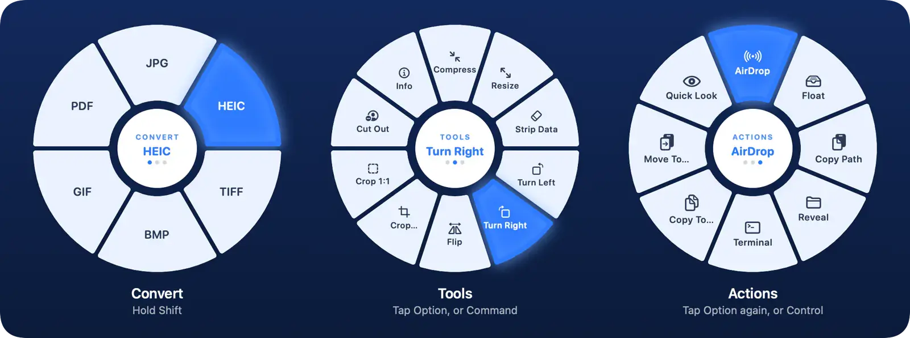
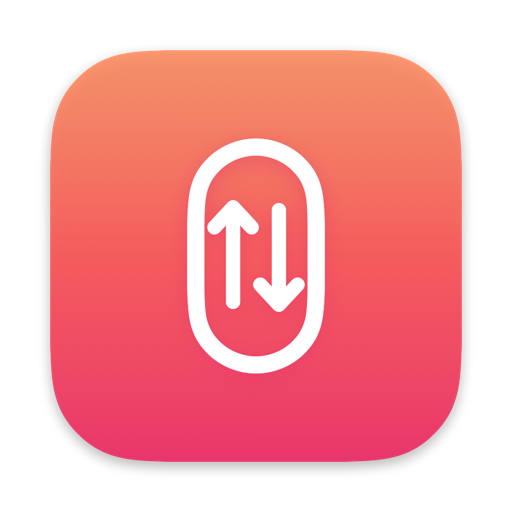
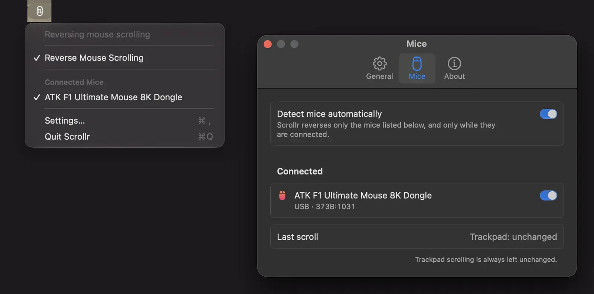
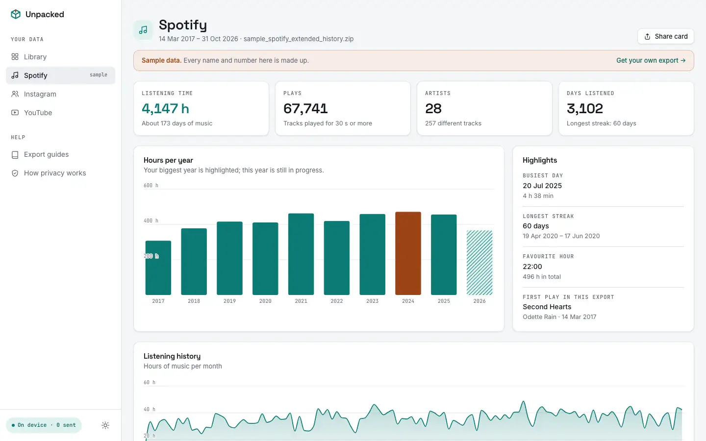

Convrt
Drag a file. Hold Shift. Drop it on a slice.

A macOS menu bar app that converts images, audio, video and PDFs. Start dragging a file, hold Shift, and a wheel of formats opens right at your cursor. Fully offline.
0
I build small, focused tools for the Mac and the web: the kind that do one job well and keep your files on your own device.
I'm Usukhbayar, 17, a third-year student at New Mongol College of Technology in Ulaanbaatar.
I'm curious about how things work, so I build small tools to find out. Most start with something that annoys me every day, like a mouse that scrolls the wrong way or a file in the wrong format, and end as an app other people can download.
I write Swift for the Mac and TypeScript for the web, and I also code in C++, Java and Python, including C++ with Raylib in VS Code. Right now I'm learning more Swift and WebGL. Away from code, I produce music in FL Studio.
Drag a file. Hold Shift. Drop it on a slice.

A macOS menu bar app that converts images, audio, video and PDFs. Start dragging a file, hold Shift, and a wheel of formats opens right at your cursor. Fully offline.

ScrollrReverse your mouse. Keep your trackpad.

A tiny macOS menu bar app that flips the scroll direction of your mouse and leaves the trackpad alone, with a switch for each mouse.
Your data exports, unpacked. Privately.

Drop the ZIP that Spotify, Instagram or YouTube gives you and see clear charts of your own data. Everything runs in your browser; nothing is uploaded.
Now
Third-year student, Ulaanbaatar.
November 2026
Three open-source projects with public code, tests and releases.
November 2026
How a SwiftUI menu bar bug cost me 97% CPU, on dev.to.
2026
Built Earth Jukebox with team RUSTMN.
Questions, ideas or opportunities: email me.